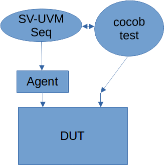

PyHDL-IF A Flexible Python/HDL Interface
PyHDL-IF
PyHDL-IF provides libraries for interfacing between Python and various Hardware Description Language (HDL) languages and simulation environments.

The PyHDL-IF library stack is shown above:
- pyhdl-pi-if - The PyHDL Procedural Interface (PI) implements connections to various HDL programming interfaces (eg VPI, DPI, etc) and exposes the Python C API via these interfaces. This allows HDL code to call Python.
- pyhdl-call-if - The PyHDL Call Interface implements synchronization mechanisms on top of the procedural-interface API to enable cross-calling between Python and HDL. This library also provides automation in the form of HDL code generation.
- pyhdl-tlm-if - The PyHDL Transaction-Level Model (TLM) interface implements a bi-directional TLM interface between Python and HDL intended for use in communicating with Bus Functional Models (BFMs).
The PyHDL-IF libraries are designed to work with or without the use of cocotb.
Example Usecase: Calling a Python Reference Model from UVM

A wide variety of reference algorithms are available as Python libraries. The pyhdl-pi-if makes it easy to call non-time-consuming Python methods directly from HDL. This can be used to pass data to a reference model implemented in Python, and check the correctness of results.
Example Usecase: Calling UVM API from Python

Creating the structure of a UVM testbench in SystemVerilog can be efficient due to reusable assets. However, test writers may wish to work in Python. This can be accomplished by implementing a test API on a SV-UVM virtual sequence class, then calling that API from Python. The PyHDL-Call-IF package enables time-consuming calls from SystemVerilog to invoke co-routines in Python, and vice versa.
Example Usecase: Coordinating cocotb and UVM Testbenches

The synchronization support built into pyhdl-call-if allows UVM
testbench environments to synchronize with cocotb signal-level
testbench environments.
© Matthew Ballance; All rights reserved.